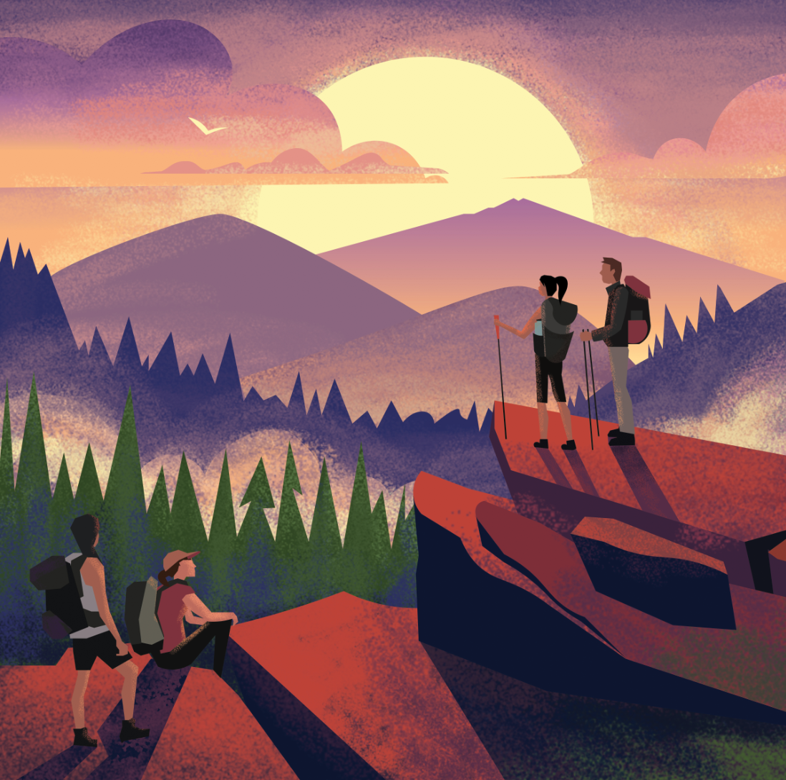
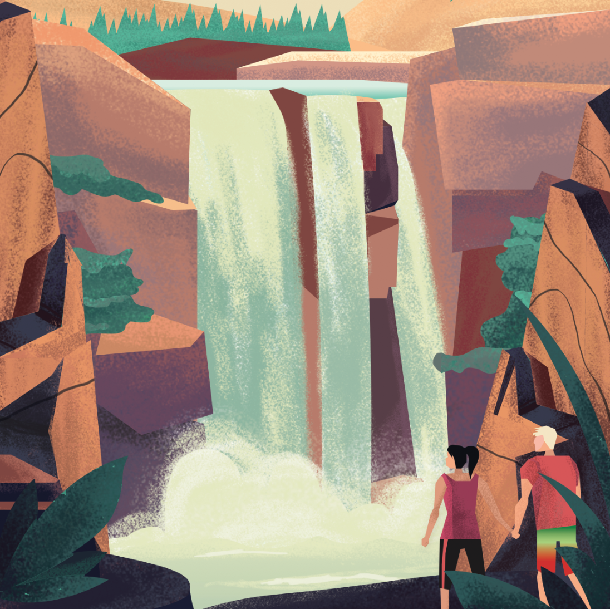

Adventure Book
For my Digital Drawing class's final project, I created an Adventure Book to showcase some outdoors experiences during my time at Dartmouth. College was easily the four most formative years of my life, and most of my personal growth came from my involvement in the Dartmouth Outing Club — I came in as a very "indoorsy" individual who would never leave the comfort of A/C, and I left with a love for climbing, a boost in self-empowerment, a desire to improve diversity and inclusivity in the outdoor space, and a community I absolutely adore.
The project features a series of eight images that highlight my time in the outdoors which I then assembled in a hand-bound book at our school's Book Arts workshop. I truly enjoyed working on this project because of its personal significance and how it gave me a way to express my gratitude to all who helped me get outside.
Platform Illustrations
Users often need to learn new processes and terms while using our product, so our main focus in our illustrations was ensuring we could come up with metaphors that made complex concepts more relatable.
Red Rock Canyon - I spent three spring breaks climbing at Red Rock with the Dartmouth Mountaineering Club (DMC)

Connecticut River - This image illustrates a particularly memorable day canoeing at the river

North Conway - I took a trad climbing class with the DMC and spent a weekend camping and climbing at Cathedral

Mount Lemmon - This trip to Mount Lemmon my freshman year helped me grow closer to club members and conquer personal fears

The Fifty - I hiked "The Fifty" - a 53.6 mile hike from Moosilauke Ravine Lodge in the Whites to Robinson Hall on campus that a team of four completes in around 28 hours straight. It was definitely a test in mental and physical endurance, and I am so proud of us for finishing strong

Waterval Boven - I spent a winter break climbing and road tripping through South Africa with three of my friends thanks to Schlitz and DMC Adventure Funding.

Lake Morey - Whenever anyone asks me where my favorite place on earth is, it's here. I love skating on Lake Morey's frozen 3-mile track -- I'm on the figure skating team at school and started out pond skating in my backyard in Minnesota, and Lake Morey brings back the child-like happiness of skating outside

Jubile - The Moosilauke Ravine Lodge is a memorable place for me, and one especially important night was Jubile, where each "crooling" and directorate member from First-Year Trips came together and celebrated the completion of the orientation program. The three weeks I spent as the "Klymbing Croo" captain and leading a team of five to show nearly 100 first-years the beauty of climbing and the outdoors was easily the best and most rewarding time of my life.

Illustration Process
For this project, I first sketched a rough draft of my vision. After that, I brought my drawing into Illustrator and created vector shapes. I liked the crispness of these illustrations, but I found that adding a more "raw" feeling was difficult. So, I exported the layers into Photoshop and used brushes to create the final textured image.

Previous Project
Woodsmoke
Next Project
Cookies for KC